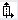

Parameter | Description | Unit |
|---|
TC  | Name of the swivel data record | |
Retraction
| No | No retraction before swiveling | |
 | Retraction in the direction of machine axis Z | |
 | Retract towards the machine axis Z and then in the direction X, Y | |
 | Maximum retraction in tool direction | |
 | Incremental retraction in tool direction | |
RD | Retraction path - (only for incremental retraction in the tool direction) | |
Swivel mode
| | Swivel mode "direct": The position of the swivel axis is selected directly. | |
| | Swivel mode "align": The tool position is specified. |
β
| Tool alignment with the swivel axis | Degrees |
 | 0° | |
 | 90° | |
0 | Value entry: The required angle can be freely entered | |
| | Note: The selected angle does not depend on the machine geometry. | |
γ
| Tool alignment with the swivel axis 0.000° Tool alignment with tool spindle 180.000° Tool alignment with tool spindle fixed Tool is fixed on the tool headstock Note: Please observe the information provided by the machine manufacturer.
| Degrees |
B | Tool alignment directly with the swivel axis | |
SP1 | Tool alignment directly with the swivel axis 0 Direct entry of the angle fixed Tool is fixed on the tool headstock Note: Please observe the information provided by the machine manufacturer.
| Degrees |
Hirth gearing
(only in the "align" swivel mode) |  | Round β to the next Hirth gearing | |
 | Round up β to the next Hirth gearing | |
 | Round off β to the next Hirth gearing | |
Tool | Tool tip position when swiveling | |
| |  | Tracking The position of the tool tip is maintained during swiveling. | |
| |  | No tracking The position of the tool tip is not maintained during swiveling. | |
Preferred direction |  | Select the preferred swivel direction if the kinematics facilitates two solutions for the selected position of the tool with respect to the workpiece | |
 | |
Rotation plane | Alignment of the rotation plane (with swivel mode "direct" or γ = fixed) | |
| |  | Standard | |
| | | Mirrored | |
αC | Align the plane of rotation in the pole position - (only in the "align" swivel mode and β "zero degrees") | Degrees |